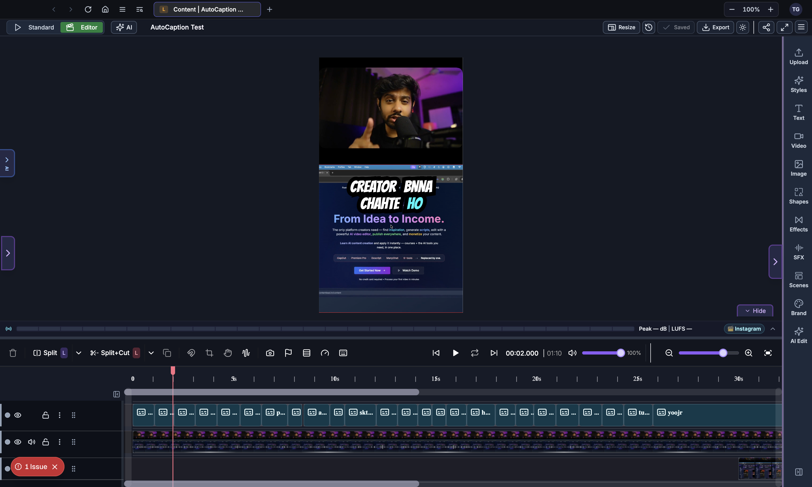
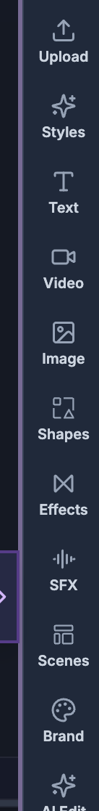
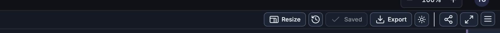

For humans — and for AI helping humans. This document describes how a person edits video by hand using the on-screen controls of the SkillTown video editor. It is not an AI skill or an automation API, so if you are an AI agent, do not treat these steps as callable commands — for programmatic/automated editing use the agent skills and commands documented elsewhere (see
_Agent/AGENTS.md). You may, however, read this doc to answer a user's "how do I…" questions and walk them, step by step, through performing these actions themselves in the editor UI.Get oriented in the SkillTown video editor: the main areas of the screen, how to move around, and where every feature lives.
The editor at a glance¶

When you open a project, the editor is organized into a few main regions:
| Region | Where it is | What it's for |
|---|---|---|
| Top bar | Across the top | Undo/redo, playback jump, project title, save status, timeline toggle, resize/orientation, Export, and the panel toggle. |
| Menu panel | Left edge (icon rail + a slide‑out panel) | Add content: media, text, shapes, scenes, effects, and more. |
| Canvas (player) | Center | A live preview of your video at the current playhead time. What you see here is what you get on export. |
| Properties panel | Right side | Appears when you select an item; shows all the settings for that item. |
| Timeline | Bottom | Your tracks and clips laid out over time. Where you arrange, trim, and sequence everything. |
The menu panel (left rail)¶

Click an icon in the left rail to open that tab. The tabs are:
| Tab | What you add / do |
|---|---|
| Upload | Upload your own images, videos, and audio files. |
| Styles | Apply a complete creator "look" to your whole video. |
| Text | Add headings and text elements. |
| Video | Browse and add stock/library video. |
| Image | Browse and add stock/library images. |
| Shapes | Add shapes and graphic elements. |
| Effects | Add transitions and visual effects between clips. |
| SFX | Search and add sound effects. |
| Scenes | Browse and add pre‑built animated scene templates. |
| Brand | Your brand colors, logos, and fonts (brand kit). |
| AI Edit | Chat with the AI assistant to build and edit your video. |
Each tab is documented in detail in its own manual page (see Related below).
The canvas (preview player)¶
The center canvas plays your project exactly as it will render.
- Press Space (or the play control in the top bar) to play/pause.
- Use the Go to start control in the top bar to jump the playhead back to the beginning.
- Select any item directly on the canvas to move, resize, or rotate it, and to open its properties panel on the right. For handles, rotation, snapping guides, and drag-and-drop onto the preview, see Canvas Editing.
The properties panel (right side)¶
Whenever you select an item — on the canvas or in the timeline — the right‑hand properties panel switches to show the controls for that specific item type (text, image, video, audio, shape, template, caption, and so on). Deselect everything to hide it.
The right panel can also be popped out into a floating window and pinned, using the panel controls in the top‑right — handy on smaller screens.
The top bar controls¶

| Control | Action |
|---|---|
| Undo | Step backwards. Shortcut: Ctrl/Cmd + Z. |
| Redo | Step forwards. Shortcut: Ctrl/Cmd + Y. |
| Go to start | Move the playhead to the beginning. |
| Play / Pause | Start or stop preview playback. |
| Project title | Shows (and lets you edit) the project name. |
| Save status | Shows saving / saved / unsaved. |
| Autosave | Toggle automatic saving on or off. |
| Save | Save the project now. Shortcut: Ctrl/Cmd + S. |
| Export | Open the export options to render and download your video. |
| Timeline toggle | Show or hide the bottom timeline. |
| Resize | Change the video's dimensions/orientation (e.g. portrait vs landscape). |
| Panel toggle | Collapse or expand the right properties panel. |
Saving your work¶
- The editor autosaves while you work (you can turn autosave off from the top bar).
- The save indicator shows the current state; Ctrl/Cmd + S saves immediately.
- Every save can be recovered later — see Exporting & Versions.
A typical workflow¶
- Add content from the left menu panel (upload media, add a scene template, add text).
- Arrange it on the timeline — order clips, trim them, stack tracks.
- Select an item and fine‑tune it in the properties panel (position, size, colors, animation).
- Preview on the canvas until it looks right.
- Export from the top bar to render and download.
Tips & good to know¶
- The whole preview is WYSIWYG — the canvas matches the final exported video.
- Collapse the timeline or right panel to get more room for the canvas when reviewing.
- On smaller screens, pop out and pin the properties panel so it doesn't cover the canvas.